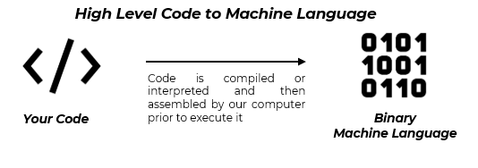
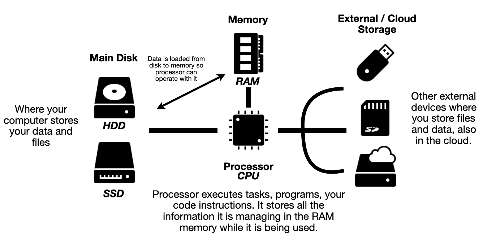

Introduction to Programming
What is programming?
Programming consists in writing code that will be executed by a computer. This code we are writing is called an algorithm, an algorithm is basically a set of instructions, steps the computer needs to do to complete a task. Changing the topic, and with the idea of being simpler we can understand an algorithm as a cooking receipt, the different steps we need to do to cook our meal.
But it is important to understand that computers don’t see things as we do, we can’t write a sentence with the explanation of the step, like we will do when explaining how to cook rice. Computers are like a big calculator and the language they us is binary, 1 and 0. They execute tasks computing operations with these two numbers. Each thing we see in our computer screen has a representation with 1 and 0 for our computers. But it will be very difficult to explain the things we do with this language, for this reason we write code that will be later translated to the language of our computer.
When we code, we write what is called high level programming language, then this language is compiled or interpreted by our computer translating it to binary language (machine language) so it can execute it.

High level code makes us very easy to program, but there are a lot of different languages, and they are created and used for different purposes, despite a same language can be used for doing different kind of things. We can group programming languages in two big groups:
Compiled. These languages are directly transformed once correctly written to a low-level language, that can be transformed later to the machine language used by our computer.
Interpreted. The different instructions written for these languages are being “interpreted” and executed directly one by one.
We can find language that use both systems or a mixture of them for working and being executed.
Understanding your computer
We have explained the main idea and basic concepts of programming and how computers process these codes to execute the process we explain him. But, ¿what the main parts our computer uses to do all its tasks are?, it is important to understand the powerful tool we are going to use to develop our code and perform tasks:
Processor (CPU): The main component responsible of executing the different instructions and compute calculations, prior to transform the high-level language to the machine language it uses.
Memory (RAM): Responsible of store the instructions, data and temporary resources needed for programs being executed by the processor. Is quick and with low capacity to focus only on the tasks being done.
Hard Disk (HDD or SDD): Computer main storage of data (programs and other files) persistently. It is very slow and with very high capacity, memory tends to access periodically to recover the information needed for our processor.
Other devices (external) (I/O): External storage devices, input, and output devices such as our screen, the keyboard or the mouse are also present and the help to interact with our computer, add more data, or visualize it.
Here is summary of our computer…

What is a program?
As we see computers execute programs that are codified by us, the programmers, these programs are composed of two key parts:
Instructions. The different pieces of code that explains the computer (CPU) what he needs to do to run the program and do the different tasks. Examples: read a value from memory, show the result of a computation, end the program if a condition is fulfilled, etc.
Data. The information the program processes. This data can be stored at memory (RAM) if they are going to be used only when the program is running, or in the hard disk or external storage device if it needs to be kept by the end of the execution. Examples: data introduced at execution by other user, data from a file red by the program, etc.